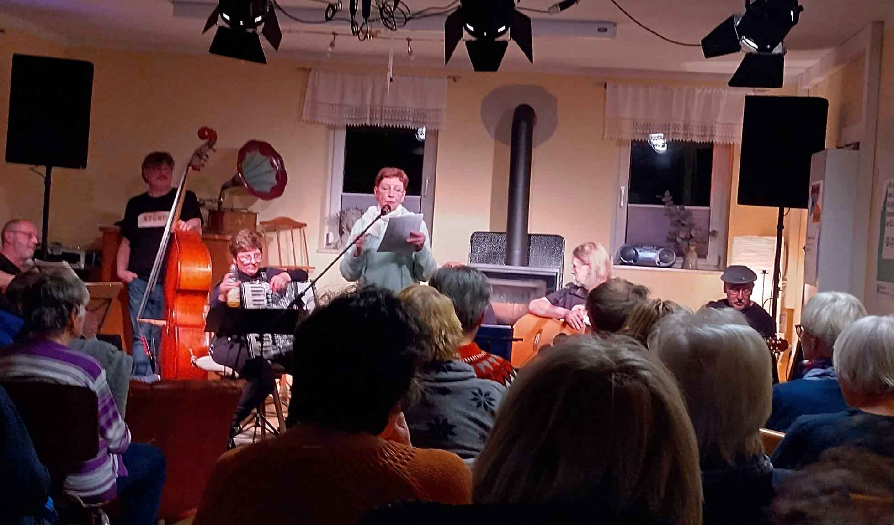

Suhl/Rohr/Meiningen. Zum 37. Mal veranstaltet der Südthüringer Literaturverein am Wochenende 27. bis 29. März 2026 eine Literaturwerkstatt. Dazu treffen sich 30 Schreibende vornehmlich aus (Süd)thüringen im Hotel zum Kloster Rohr, das zum dritten Mal Austragungsort des Literatur-Treffens ist. Die hochkarätigen Lektoren sind diesmal André Schinkel aus Halle (Prosagruppe), Christian Rosenau aus Coburg (Lyrikgruppe) und Natalie Ewald aus Schwarza (Jugendgruppe). Und das Beste: am Sonntagvormittag, dem 29. März, ab 10 Uhr haben Interessenten die Möglichkeit, die besten literarischen Ergebnisse aus dieser echten Schreibwerkstatt (d.h. neue Texte entstehen unmittelbar vor Ort) in der Aula der Volkshochschule Meiningen, Klostergasse 1, kennenzulernen. Darüber informierte der Südthüringer Literaturverein.
Seit einigen Jahren stellen die hiesigen Autoren ihre Werkstatt-Tage unter ein inhaltliches Motto. Diesmal haben sie als Thema „Irrwege" gewählt. Wer dabei auch Querverbindungen zur aktuellen politischen Lage erwartet, dürfte nicht ganz falsch liegen. Allerdings weisen die entstehenden Texte meist deutlich über jegliche inhaltliche Einschränkung hinaus. Dafür sorgen vor allem die Anregungen und gestellten Schreibaufgaben der Lektoren. Zur Sonntagsmatinee in Meiningen werden die Texte von den Lektoren auch vorgestellt, von den Autorinnen und Autoren selbst gelesen und musikalisch bereichert von Beiträgen des Gitarristen Lukas Eberwein aus Eckental, der selbst Teilnehmer der Werkstatt-Tage ist. Der Eintritt zu der Lesung in der Meininger VHS ist frei.
Die Südthüringer Literaturwerkstatt wird seit Jahren gefördert von der Kulturstiftung Thüringen, eine Lesereihe des Vereins auch von der Rhön-Rennsteig-Sparkasse.
Interessenten sind herzlich eingeladen, sich an diesem Sonntagmorgen selbst ein Bild von frisch entstandener Literatur aus Südthüringen zu machen – trotz der von manchen als „Irrweg" empfundenen Zeitumstellung an diesem Sonntagmorgen. Man darf gespannt sein, welche schöpferischen Impulse die Region diesmal für neue Literatur bereithält.
.jpg)
